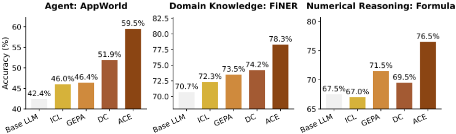
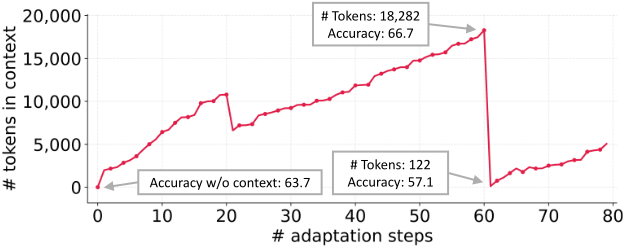
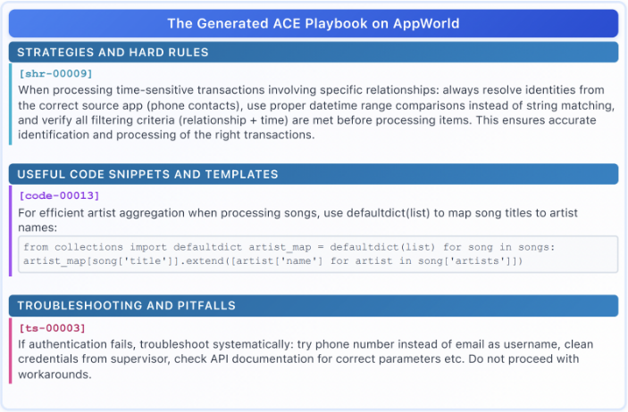
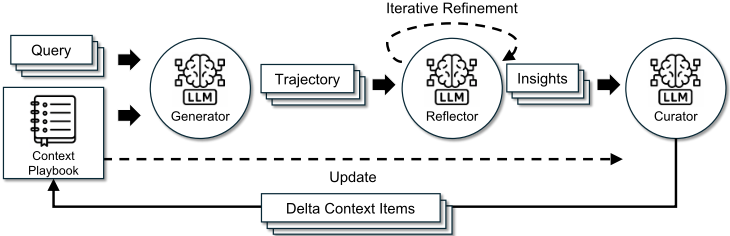
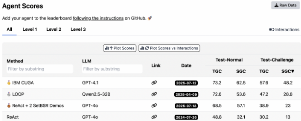

Agentic Context Engineering（ACE）：通过上下文演化实现语言模型自我改进
论文针对现有上下文适配方法的两大缺陷：brevity bias（提示优化趋向简短通用指令而丢失领域细节）与 context collapse（LLM 整体重写使累积上下文坍缩成低信息摘要，AppWorld 案例中上下文从 18,282 token 骤降至 122 token、准确率从 66.7 跌至 57.1）。提出 ACE 框架，把上下文当作持续演化的 playbook，由 Generator、Reflector、Curator 三个角色分工协作，通过结构化增量 delta 更新与 grow-and-refine 机制（语义去重、按需剪枝）累积并精炼策略，且可仅靠执行反馈、无需人工标注。关键结论：AppWorld 上平均超越基线 10.6%，无标注时仍提升 14.8%，以 59.4% 平均分追平榜首 IBM CUGA；金融基准提升 8.6%，DDXPlus 从 75.2 提至 90.2；适配延迟较 GEPA 降低 82.3%、较 Dynamic Cheatsheet 降低 91.5%，评估阶段 91.8% 输入 token 命中缓存。对不训练模型、专注把模型用好的团队，这是上下文工程方向的直接对标工作。
现有 context adaptation（上下文适配）方法存在两个根本缺陷：一是 brevity bias，提示优化器（如 GEPA）倾向收敛到简短通用指令，丢失领域启发式、工具使用指南和常见失败模式等细节；二是 context collapse，依赖 LLM 对累积上下文做整体重写时，上下文会坍缩成更短、信息量更低的摘要，造成性能骤降（AppWorld 案例中从 18,282 token 坍缩至 122 token，准确率 66.7 跌至 57.1，低于不适配基线的 63.7）。论文要解决如何在离线（system prompt 优化）与在线（测试时记忆适配）两种场景下，构建能持续累积、精炼并组织详细领域知识、且不随迭代退化的上下文。
ACE 将上下文表示为结构化、逐条（itemized）的 bullet 集合（每条含唯一 ID、helpful/harmful 计数等元数据与内容），而非单一整体 prompt。框架采用三角色分工：Generator 生成推理轨迹并标注哪些 bullet 有用或误导；Reflector 从成功与错误中提炼具体洞见（支持多轮迭代精炼）；Curator 将洞见合成为紧凑的 delta 条目，由轻量非 LLM 逻辑确定性地合并进现有上下文。三大创新：(1) 专职 Reflector 将评估与洞见提取从 curation 中解耦；(2) 增量 delta 更新取代整体重写，支持多个 delta 并行合并，降低延迟与算力成本；(3) grow-and-refine 机制通过语义 embedding 去重与主动/惰性剪枝平衡上下文扩张与冗余控制。支持多 epoch 适配，可仅用自然执行反馈（如代码执行成败）驱动，无需标注监督。
AppWorld（DeepSeek-V3.1）：ReAct+ACE 平均超越所选基线 10.6%；离线设置下超越 ReAct+ICL 12.3%、超越 ReAct+GEPA 11.9%；在线设置下超越 Dynamic Cheatsheet 平均 7.6%
无 GT 标签时，ReAct+ACE 仍比 ReAct 基线平均提升 14.8%
AppWorld 排行榜（2025-09）：ReAct+ACE 平均 59.4% 追平第一名 IBM CUGA（60.3%，基于 GPT-4.1 的生产级 Agent），在线适配下在 test-challenge 上 TGC 超出 8.4%、SGC 超出 0.7%
金融基准：整体 +8.6%；离线超越 ICL、MIPROv2、GEPA 平均 10.9%；在线超越 DC 平均 6.2%
DDXPlus 医疗推理：从 75.2 提升至 90.2（+15.0），而 GEPA 仅 76.4（+1.2）；BIRD-SQL 整体 52.9（+5.1）
成本：AppWorld 离线适配较 GEPA 延迟降低 82.3%、rollout 次数降低 75.1%；FiNER 在线适配较 DC 延迟降低 91.5%、token 美元成本降低 83.6%；适配阶段输入/输出 token 较 GEPA 减少 80.8%/83.6%
KV cache：OpenAI API（GPT-5.1）prompt-caching 实验中 91.8% 输入 token 命中缓存，计费输入 token 成本降低 82.6%
消融：移除增量 delta 更新在 AppWorld test-normal 上导致 -11.7% TGC 和 -27.8% SGC
跨模型泛化：在 DeepSeek-V3.1、GPT-OSS-120B、GPT-5.1、Llama-3.3-70B-Instruct 四个模型家族上均一致提升，通常 5-12 个百分点
鲁棒性：对较弱 Reflector 仍有效，可容忍中等噪声/有害反思，仅在每步都注入对抗性更新时才低于基线
相对 GEPA 等提示进化方法与 Dynamic Cheatsheet 等测试时记忆方法，ACE 的区别在于：(1) 首次系统识别并针对 brevity bias 与 context collapse 两个失败模式设计解决方案；(2) 用结构化 itemized bullet + 增量 delta 更新 + 确定性合并逻辑取代 LLM 整体重写，保证已有知识长期稳定保留并支持细粒度记账（去重、定向精炼、helpful/harmful 追踪）；(3) Generator/Reflector/Curator 三角色分工，将洞见提取与 curation 解耦；(4) 同时覆盖离线 system prompt 优化与在线 agent 记忆两类场景，并将成本、延迟与 KV cache 复用纳入系统评估，而不仅报告准确率。
相关度级别：high
命中能力域：3.1 上下文工程与记忆 | 3.2 提示工程 | 3.3 Agent 架构与工具使用 | 3.5 评测与可靠使用
理由：论文与团队多个核心能力域直接命中：3.1 方面，ACE 的核心就是把上下文作为结构化、可演化的 playbook 进行管理，涵盖 Agent 记忆、结构化上下文组织与生产环境中的上下文管理，且明确处理长上下文成本与 KV cache 复用；3.2 方面，离线模式即 system prompt 自动优化，与 GEPA、MIPROv2 等 prompt optimizer 直接对比并解决其 brevity bias；3.3 方面，Generator/Reflector/Curator 是典型的 Agent loop/harness 分工设计，实验基于 ReAct + 工具调用（AppWorld 的 API 交互与代码执行），关注单 Agent 执行可靠性与执行反馈利用；3.5 方面，论文系统评测了成本、延迟、超参敏感性与对噪声/有害反思的鲁棒性，属于成本与效率优化及可靠性实证研究。整个方法不需要训练模型，完全属于'把模型用好'的范畴，与团队定位高度一致。
建议动作：深入精读并做内部分享
arXiv:2510.04618v3 [cs.LG] 2026年3月29日
Qizheng Zhang 1 ∗ , Changran Hu 2 ∗ , Shubhangi Upasani 2 , Boyuan Ma 2 , Fenglu Hong 2 , Vamsidhar Kamanuru 2 , Jay Rainton 2 , Chen Wu 2 , Mengmeng Ji 2 , Hanchen Li 3 , Urmish Thakker 2 , James Zou 1 , Kunle Olukotun 1
1 斯坦福大学 2 SambaNova Systems, Inc. 3 加州大学伯克利分校
大语言模型（LLM）应用，如 agent 和领域特定推理，正日益依赖于上下文适应（context adaptation）：即通过指令、策略或证据来修改输入，而非进行权重更新。已有方法提升了可用性，但常常受到两类问题的困扰：一是简洁偏差（brevity bias），即为追求简洁摘要而丢弃领域洞见；二是上下文坍塌（context collapse），即迭代重写会随时间推移侵蚀细节。我们提出 ACE（Agentic Context Engineering，智能体上下文工程）框架，该框架将上下文视为不断演化的操作手册（playbook），通过生成、反思和整理（curation）的模块化流程来积累、精炼并组织策略。ACE 通过结构化的增量更新来防止坍塌，这些更新既保留了详细知识，又能随长上下文模型进行扩展。在多个 agent 与领域特定的基准测试（benchmark）上，ACE 既可离线优化上下文（如系统提示），也可在线优化上下文（如 agent 记忆），始终优于强基线：在 agent 任务上 +10.6%，在金融任务上 +8.6%，同时显著降低了适应延迟与执行（rollout）成本。值得注意的是，ACE 无需标注监督即可有效适应，而是通过利用自然的执行反馈来实现。在 AppWorld 排行榜上，ACE 在总体平均分上与排名第一的生产级 agent 持平，并在更难的 test-challenge 划分上超越后者，尽管其使用的是更小的开源模型。这些结果表明，全面且不断演化的上下文能够以低开销实现可扩展、高效且自我改进的 LLM 系统。

基于大语言模型（LLM）的现代 AI 应用，例如 LLM agent（Yao et al., 2023; Yang et al., 2024）和复合 AI 系统（Zaharia et al., 2024），日益依赖于上下文适应（context adaptation）。上下文适应无需修改模型权重，而是通过将明确化的指令、结构化推理步骤或领域特定的输入格式直接纳入模型输入，从而在模型训练完成后提升性能。上下文支撑着众多 AI 系统组件，包括引导下游任务的系统提示（Opsahl-Ong et al., 2024; Agrawal et al., 2025）、承载过往事实与经验的记忆（Suzgun et al., 2025; Xu et al., 2025），以及能够减少幻觉并补充知识的事实性证据（Asai et al., 2024）。
1
通过上下文而非权重进行适应具有若干关键优势。上下文对用户和开发者而言是可解释、可说明的（Wei et al., 2022; Wang et al., 2023），能够在运行时快速整合新知识（Lewis et al., 2020; Borgeaud et al., 2022），并可在复合系统中的多个模型或模块之间共享（Khot et al., 2023）。与此同时，长上下文 LLM（Peng et al., 2024）以及 KV cache 复用等上下文高效推理技术（Gim et al., 2024; Yao et al., 2025）的进展，正使基于上下文的方法在部署中日益实用。因此，上下文适应正在成为构建能力强、可扩展且自我改进的 AI 系统的核心范式。
尽管取得了这些进展，现有的上下文适应方法仍面临两个局限。其一是简洁性偏差（brevity bias）：许多提示优化器优先考虑简洁可用的指令，而非全面的积累。例如，GEPA（Agrawal et al., 2025）将简洁性作为一项优点加以强调，但这种抽象化可能遗漏对实践至关重要的领域特定启发式规则、工具调用指南或常见失败模式（Gao et al., 2025）。这一目标在某些场景下与验证指标相吻合，但往往无法捕捉 agent 和知识密集型应用所需的详细策略。其二是上下文坍缩（context collapse）：依赖 LLM 进行整体重写的方法往往会随时间推移退化为更短、信息量更低的摘要，从而导致性能急剧下降（图 2）。在交互式 agent（Trivedi et al., 2024; Patil et al., 2024; Zhang et al., 2024）、领域特定编程（Ye et al., 2023; Zhang et al., 2025a;b; Mang et al., 2025）以及金融或法律分析（Loukas et al., 2022; Guha et al., 2023; Wang et al., 2025a）等领域，出色的性能依赖于保留详细的、任务特定的知识，而不是将其压缩去除。
随着 agent 与知识密集型推理等应用对可靠性提出更高要求，近期研究已转向用大量潜在有用的信息来填充上下文（Jiang et al., 2025; Chung et al., 2025; Chen et al., 2025），这得益于长上下文 LLM 的进展（Peng et al., 2024; Mao et al., 2024）。我们认为，上下文不应充当简洁的摘要，而应作为全面、结构化的 playbook（策略手册），做到详尽、包容，并富含领域洞见。与常常受益于简洁概括的人类不同，LLM 在获得长而详尽的上下文时更为有效，并且能够自主提炼相关性（Jiang et al., 2025; Liu et al., 2025b; Suzgun et al., 2025）。因此，上下文不应将领域特定的启发式方法与策略压缩掉，而应将其保留下来，让模型在推理时自行判断什么才是重要的。
为了解决这些局限性，我们提出 ACE（Agentic Context Engineering），一个面向全面上下文适应的框架，同时适用于离线场景（例如系统提示优化）与在线场景（例如测试时记忆适应）。ACE 并不将上下文压缩成提炼后的摘要，而是将其视为不断演化的 playbook，随时间推移积累并组织各类策略。在设计上，ACE 融入了由生成、反思与整理（curation）构成的模块化工作流，并遵循“增长—精炼”（grow-and-refine）原则引入结构化的增量更新。这一设计保留了详尽的领域特定知识，防止了上下文坍缩（context collapse），并使上下文在整个适应过程中始终保持全面且可扩展。
我们在两类最能从全面且不断演化的上下文中受益的 LLM 应用上对 ACE 进行评估：（1）agent（Trivedi et al., 2024），这类应用需要多轮推理、工具调用与环境交互，积累的策略可在不同回合（episode）之间复用；（2）领域特定的基准测试（benchmark），这类应用需要专门的策略与知识，例如金融分析（Loukas et al., 2022; Wang et al., 2025a）。我们的主要发现如下：
2
上下文适应（context adaptation，或称上下文工程，context engineering）是指通过构造或修改大语言模型（LLM）的输入、而非改变其权重来改进模型行为的方法。当前最先进的方法利用自然语言反馈（Shinn et al., 2023; Yuksekgonul et al., 2025; Agrawal et al., 2025）。在这一范式中，语言模型检查当前上下文以及执行轨迹、推理步骤或验证结果等信号，并就应如何修订上下文生成自然语言反馈。随后，该反馈被纳入上下文中，从而实现迭代适应。代表性方法包括：Reflexion（Shinn et al., 2023），通过反思失败来改进 Agent 规划；TextGrad（Yuksekgonul et al., 2025），通过类梯度的文本反馈来优化提示词；GEPA（Agrawal et al., 2025），基于执行轨迹迭代地精炼提示词并取得强劲性能，在某些设置下甚至超越强化学习方法；以及 Dynamic Cheatsheet（Krause et al., 2019），构建一个外部记忆，在推理过程中积累来自过去成功与失败的策略和经验教训。这些自然语言反馈方法代表了一项重大进展，为改进 LLM 系统提供了超越权重更新的灵活且可解释的信号。
**简洁性偏差（Brevity Bias）** 上下文自适应方法的一个反复出现的局限是简洁性偏差（brevity bias）：即优化倾向于坍缩为简短、通用提示词的趋势。Gao et al. (Gao et al., 2025) 在面向测试生成的提示优化中记录了这一效应：迭代方法反复生成几乎完全相同的指令（例如，“创建单元测试以确保方法按预期运行”），牺牲了多样性并遗漏了领域特定的细节。这种收敛不仅缩小了搜索空间，还会在多次迭代中传播反复出现的错误，因为优化后的提示词往往与其种子提示词继承相同的缺陷。更广泛地说，这种偏差会损害那些需要详细且上下文丰富的指导的领域的性能——例如多步智能体、程序合成或知识密集型推理——在这些领域中，成功的关键在于积累而非压缩任务特定的洞见。

**上下文坍缩（Context Collapse）** 在对 AppWorld 基准测试（benchmark）(Trivedi et al., 2024) 进行的案例研究中，我们观察到一种我们称之为上下文坍缩（context collapse）的现象，它出现在 LLM 被要求在每个自适应步骤完全重写累积上下文的时候。随着上下文变得庞大，模型倾向于将其压缩成短得多、信息量更低的摘要，导致信息的急剧丢失。例如，在第 60 步时，上下文包含 18,282 个 token，准确率达到 66.7，但在紧接着的下一步，它坍缩至仅 122 个 token，准确率降至 57.1——比未进行自适应时的 63.7 基线准确率还要差。虽然我们通过 Dynamic Cheatsheet (Suzgun et al., 2025) 来突出展示这一问题，但该问题并非该方法所特有；相反，它反映了使用 LLM 进行端到端上下文重写的一种根本性风险：累积的知识可能被突然抹去，而非得以保留。
3

我们提出 ACE（Agentic Context Engineering，智能体上下文工程），这是一个在离线（例如系统提示优化）和在线（例如测试时记忆自适应）两种场景下均可实现可扩展且高效上下文自适应的框架。ACE 不将知识压缩为简短的摘要或静态指令，而是将上下文视为持续演进的策略手册（playbook），随时间不断积累、精炼并组织策略。受 Dynamic Cheatsheet (Suzgun et al., 2025) 智能体式设计的启发，ACE 在三个角色之间引入了结构化分工（图 4）：Generator（生成器）负责产生推理轨迹；Reflector（反思器）负责从成功与错误中提炼具体洞见；Curator（策展器）负责将这些洞见整合为结构化的上下文更新。这与人类的学习方式如出一辙：实验、反思、巩固，同时避免了让单一模型承担全部职责所造成的瓶颈。
为解决 §2.2 中讨论的既有方法的局限性（尤其是简洁性偏差（brevity bias）与上下文坍缩（context collapse）），ACE 引入了三项关键创新：(1) 一个专门的 Reflector，将评估与洞见提取从策展过程中分离出来，从而提升上下文质量与下游性能（§4.6）；(2) 增量式 delta 更新（§3.1），以局部化编辑取代代价高昂的整体式重写，同时降低延迟与计算成本（§4.7）；(3) 生长-精炼（grow-and-refine）机制（§3.2），在上下文的稳定扩展与冗余控制之间取得平衡。
如图 4 所示，工作流程始于 Generator 为新查询生成推理轨迹，这些轨迹既显现出有效的策略，也暴露出反复出现的陷阱。Reflector 对这些轨迹进行评析以提取经验教训，并可选择在多次迭代中对其加以精炼。随后，Curator 将这些经验教训合成为紧凑的 delta 条目，再由轻量级的非 LLM 逻辑确定性地合并到现有上下文中。由于更新是逐项且局部的，多个 delta 可以并行合并，从而支持大规模的批量自适应。ACE 还支持多轮次（multi-epoch）自适应，即对相同的查询进行多次访问，以逐步强化上下文。
4

ACE 的一个核心设计原则是将上下文表示为一组结构化、逐条组织的条目（bullet），而非单一的整体式提示（prompt）。bullet 的概念类似于 Dynamic Cheatsheet（Suzgun et al., 2025）和 A-MEM（Xu et al., 2025）等 LLM 记忆框架中记忆条目（memory entry）的概念，但在此基础上进一步扩展：每个 bullet 由两部分构成：(1) 元数据（metadata），包括一个唯一标识符，以及记录该条目被标记为有益或有害次数的计数器；(2) 内容（content），用于捕捉一个小的知识单元，例如一条可复用的策略、一个领域概念或一种常见失败模式。在解决新问题时，Generator 会标示出哪些 bullet 是有用的、哪些具有误导性，从而提供反馈，引导 Reflector 提出纠正性更新。
这种条目化设计带来了三个特性：(1) 局部化（localization），即仅更新相关的 bullet；(2) 细粒度检索（fine-grained retrieval），使 Generator 能够聚焦于最切题的知识；以及 (3) 增量自适应（incremental adaptation），支持在推理过程中高效地执行合并、剪枝与去重。
ACE 并不完整地重新生成上下文，而是增量式地生成紧凑的 delta 上下文（delta contexts）：即由 Reflector 提炼、再由 Curator 整合的小规模候选 bullet 集合。这避免了完整重写所带来的计算成本与延迟，同时确保过往知识得以保留、新的洞见得以稳步追加。随着上下文不断增长，这一方法能够为长程（long-horizon）或领域密集型应用提供所需的可扩展性。
除了增量式增长之外，ACE 还通过周期性或惰性（lazy）的精炼来确保上下文保持紧凑且切题。在 grow-and-refine 过程中，带有新标识符的 bullet 会被追加，而已有的 bullet 则在原位更新（例如递增计数器）。随后，去重步骤通过语义嵌入（semantic embeddings）对各 bullet 进行比较，从而剪除冗余。这一精炼可以主动执行（在每次 delta 之后）或惰性执行（仅当超出上下文窗口时），具体取决于应用对延迟和准确性的要求。
总体而言，增量式更新与 grow-and-refine 相结合，使上下文得以自适应扩展、保持可解释性，并避免了整体式上下文重写所引入的潜在方差。
我们对 ACE 的评估表明：
5
我们在两类最能从上下文演化中获益的 LLM 应用上对 ACE 进行评估：（1）LLM agent，这类应用需要多轮推理、工具调用与环境交互；借助 ACE，agent 能够跨回合、跨环境地积累并复用策略；（2）领域特定推理，这类应用要求掌握专业概念与技巧；我们以金融分析作为主要案例研究，并展示在医学推理和 text-to-SQL 上的额外结果。
评估指标：对于 AppWorld，我们遵循官方基准测试（benchmark）协议，在 test-normal 和 test-challenge 两个划分上报告任务目标完成率（Task Goal Completion, TGC）与场景目标完成率（Scenario Goal Completion, SGC）。对于 FiNER、Formula 和 DDXPlus，我们遵循原始设置并报告准确率，其定义为预测答案与标准答案完全一致的比例。对于 BIRD-SQL，我们采用 LLM-as-a-judge（Zheng et al., 2023）协议，使用 GPT-4o-mini（OpenAI, 2024）进行评估。
所有数据集均遵循原始的训练/验证/测试划分。对于离线上下文适配，各方法在训练集上进行优化，并在测试集上以 pass@1 准确率进行评估。对于在线上下文适配，各方法在测试集上按顺序进行评估：对每个样本，模型首先使用当前上下文进行预测，然后基于该样本更新其上下文。所有方法均使用同一个打乱后的测试集。
Base LLM 基础模型直接在每个基准测试上进行评估，不使用任何上下文工程，并采用数据集作者提供的默认提示。对于 AppWorld，我们遵循该基准测试作者发布的官方 ReAct（Yao et al., 2023）实现，并在此框架之上构建所有其他基线与方法。
上下文学习（In-Context Learning, ICL）（Agarwal et al., 2024） ICL 在输入提示中向模型提供任务示例（少样本（few-shot）或多样本（many-shot））。这使得模型无需权重更新即可推断任务格式和期望输出。当所有训练样本都能容纳在模型的上下文窗口内时，我们提供全部训练样本；否则，我们用尽可能多的示例填满上下文窗口。
MIPROv2（Opsahl-Ong et al., 2024） MIPROv2 是一种流行的面向 LLM 应用的提示优化器，其通过贝叶斯优化联合优化系统指令与上下文示例。我们使用官方 DSPy 实现（DSPy, b），并设置 auto="heavy" 以最大化优化性能。
6
GEPA（Agrawal et al., 2025） GEPA（Genetic-Pareto）是一种基于反思式提示演化的样本高效提示优化器。它收集执行轨迹（推理、工具调用、中间输出），并应用自然语言反思来诊断错误、进行信用分配并提出提示更新。遗传帕累托搜索会维护一个由高性能提示组成的前沿集合，从而缓解局部最优。实证结果表明，GEPA 优于 GRPO 等强化学习方法以及 MIPROv2 等提示优化器，能以多达 35× 更少的 rollout 次数取得最高 10-20% 的准确率提升。我们使用官方 DSPy 实现（DSPy, a），并设置 auto="heavy" 以最大化优化性能。
Dynamic Cheatsheet（DC）（Suzgun et al., 2025） Dynamic Cheatsheet（DC）是一种测试时学习方法，它引入了一个由可复用策略和代码片段组成的自适应外部记忆。通过利用新遇到的输入和输出持续更新这一记忆，DC 使模型能够积累知识并在不同任务之间复用，通常能带来相对静态提示方法的大幅改进。DC 的一个关键优势在于它不需要真实标签：模型可以基于自身的生成结果来整理自己的记忆，这使得该方法高度灵活且适用范围广泛。我们使用作者发布的官方实现（Suzgun et al.），并将其设置为使用累积模式（DC-CU）。
ACE（本文方法） ACE 通过 Agentic 上下文工程框架对 LLM 上下文进行优化，以支持离线与在线两种适配。为确保公平，我们让 Generator、Reflector 和 Curator 使用同一个 LLM（即 DeepSeek-V3.1 的非思考模式（Liu et al., 2024a）），从而避免能力更强的 Reflector 或 Curator 向能力较弱的 Generator 进行知识迁移。这样便隔离出了上下文构建本身所带来的收益。我们还在附录中使用其他骨干 LLM 对 ACE 进行了评估，并观察到一致的提升。我们采用批大小为 1 的设置（即从每个样本构建一个增量上下文（delta context））。我们将离线适配中 Reflector 精炼轮数的上限以及 epoch 数的上限均设为 5。
| Method. | GT Labels. | Test-Normal.TGC ↑ | Test-Normal.SGC ↑ | Test-Challenge.TGC ↑ | Test-Challenge.SGC ↑ | Average. |
|---|---|---|---|---|---|---|
| DeepSeek-V3.1-671B as Base LLM | DeepSeek-V3.1-671B as Base LLM | DeepSeek-V3.1-671B as Base LLM | DeepSeek-V3.1-671B as Base LLM | DeepSeek-V3.1-671B as Base LLM | DeepSeek-V3.1-671B as Base LLM | |
| ReAct | 63.7 | 42.9 | 41.5 | 21.6 | 42.4 | |
| Offline Adaptation | Offline Adaptation | Offline Adaptation | Offline Adaptation | Offline Adaptation | Offline Adaptation | |
| ReAct + ICL | ✓ | 64 . 3 +0 . 6 | 46 . 4 +3 . 5 | 46 . 0 +4 . 5 | 27 . 3 +5 . 7 | 46 . 0 +3 . 6 |
| ReAct + GEPA | ✓ | 64 . 9 +1 . 2 | 44 . 6 +1 . 7 | 46 . 0 +4 . 5 | 30 . 2 +8 . 6 | 46 . 4 +4 . 0 |
| ReAct + ACE | ✓ | 76 . 2 + 12 . 5 | 64 . 3 + 21 . 4 | 57 . 3 + 15 . 8 | 39 . 6 + 18 . 0 | 59 . 4 + 17 . 0 |
| ReAct + ACE | ✗ | 75 . 0 +11 . 3 | 64 . 3 + 21 . 4 | 54 . 4 +12 . 9 | 35 . 2 +13 . 6 | 57 . 2 +14 . 8 |
| Online Adaptation | Online Adaptation | Online Adaptation | Online Adaptation | Online Adaptation | Online Adaptation | |
| ReAct + DC (CU) | ✗ | 65 . 5 +1 . 8 | 58 . 9 + 16 . 0 | 52 . 3 +10 . 8 | 30 . 8 +9 . 2 | 51 . 9 +9 . 5 |
| ReAct + ACE | ✗ | 69 . 6 + 5 . 9 | 53 . 6 +10 . 7 | 66 . 0 + 24 . 5 | 48 . 9 + 27 . 3 | 59 . 5 + 17 . 1 |
| Method. | GT Labels. | Test-Normal.TGC ↑ | Test-Normal.SGC ↑ | Test-Challenge.TGC ↑ | Test-Challenge.SGC ↑ | Average. |
表 1：AppWorld Agent 基准测试上的结果（以 DeepSeek-V3.1-671B 作为基础 LLM）。"GT labels" 表示在适配期间 Reflector 是否可以获取真实标签（ground-truth labels）。我们在官方 ReAct 实现的基础上，针对离线和在线两种上下文适配场景，将 ACE 框架与多个基线方法进行比较评估。ReAct + ACE 相比所选基线平均高出 10.6%，并且即使无法访问 GT 标签也能取得良好的性能。
分析：AppWorld 如表 1 所示，ACE 在 AppWorld 上持续优于强大的基线方法。在离线设置中，ReAct + ACE 以显著优势（分别为 12.3% 和 11.9%）超越 ReAct + ICL 和 ReAct + GEPA，这表明结构化、不断演化且详尽的上下文，相比固定的示例演示或单一优化的指令提示，能够实现更有效的智能体学习。这些增益同样延伸到在线设置：ACE 继续以平均 7.6% 的优势超越 Dynamic Cheatsheet 等先前的自适应方法。
在智能体用例中，即使适配期间无法获取真实标签，ACE 依然保持有效：在此设置下，ReAct + ACE 相比 ReAct 基线平均提升 14.8%。这种鲁棒性源于 ACE 利用在执行过程中自然可获得的信号（例如代码执行的成功或失败）来引导 Reflector 和 Curator 形成关于成功与失败的结构化经验教训。综合来看，这些结果确立了 ACE 作为构建自我改进智能体的强大且通用框架的地位，无论有无标注监督，这类智能体都能可靠地进行适配。
7
值得注意的是，在最新的 AppWorld 排行榜上（截至 2025 年 9 月 20 日；图 5），ReAct + ACE（平均 59.4%）与排名第一的 IBM CUGA（60.3%）1 相当——后者是一个基于 GPT-4.1 的生产级智能体（Marreed et al., 2025）——而前者使用的开源模型 DeepSeek-V3.1 规模要小得多。借助在线适配，ReAct + ACE 在 test-challenge 上的 TGC 甚至超越 IBM CUGA 8.4%，SGC 超越 0.7%，这凸显了 ACE 在为智能体构建全面且自我演化的上下文方面的有效性。
| Method | GT Labels | FiNER (Acc ↑ ) | Formula (Acc ↑ ) | Average |
|---|---|---|---|---|
| DeepSeek-V3.1 as Base LLM | DeepSeek-V3.1 as Base LLM | DeepSeek-V3.1 as Base LLM | DeepSeek-V3.1 as Base LLM | DeepSeek-V3.1 as Base LLM |
| Base LLM | 70.7 | 67.5 | 69.1 | |
| Offline Adaptation | Offline Adaptation | Offline Adaptation | Offline Adaptation | Offline Adaptation |
| ICL | ✓ ✓ ✓ | 72 . 3 +1 . 6 72 . 4 +1 . 7 73 . 5 +2 . 8 78 . 3 + 7 . 6 | 67 . 0 - 0 . 5 69 . 5 +2 . 0 71 . 5 +4 . 0 85 . 5 + 18 . 0 83 . 0 +15 . 5 | 69 . 6 +0 . 5 70 . 9 +1 . 8 72 . 5 +3 . 4 81 . 9 + 12 . |
| MIPROv2 | ✓ | |||
| GEPA | ||||
| ACE | 8 | |||
| ACE | ✗ | 71 . 1 +0 . 4 | 77 . 1 +8 . 0 | |
| Online Adaptation | Online Adaptation | Online Adaptation | Online Adaptation | Online Adaptation |
| DC (CU) | ✓ | 74 . 2 +3 . 5 | 69 . 5 +2 . 0 | 71 . 8 +2 . 7 |
| DC (CU) | ✗ | 68 . 3 - 2 . 4 | 62 . 5 - 5 . 0 | 65 . 4 - 3 . 7 |
| ACE | ✓ | 76 . 7 + 6 . 0 | 76 . 5 +9 . 0 | 76 . 6 + 7 . 5 |
| ACE | ✗ | 67 . 3 - 3 . 4 | 78 . 5 + 11 . 0 | 72 . 9 +3 . 8 |
| Method | GT Labels | FiNER (Acc ↑ ) | Formula (Acc ↑ ) | Average |
分析：金融基准测试 如表 2 所示，ACE 在金融分析基准测试上带来了显著提升。在离线设置中，当提供来自训练集划分的真实答案时，ACE 以明显优势超越 ICL、MIPROv2 和 GEPA（平均提升 10.9%），这表明当任务需要超出固定示例或单体式优化提示词范围的精确领域知识（例如金融概念、XBRL 规则）时，结构化且不断演化的上下文尤为有效。在在线设置中，ACE 仍以平均 6.2% 的优势超越 DC 等先前的自适应方法，进一步证实了智能体上下文工程在跨专业领域积累可复用洞见方面的益处。
此外，我们还观察到，当缺乏真实监督或可靠的执行信号时，ACE 和 DC 的性能都可能下降。在这种情况下，所构建的上下文可能被虚假或误导性信号污染，这凸显了在没有可靠反馈的情况下进行推理时自适应的潜在局限。这表明，尽管 ACE 在丰富反馈（例如智能体任务中的代码执行结果或公式正确性）下表现稳健，但其有效性取决于是否存在能让 Reflector 和 Curator 做出合理判断的信号。我们将在 §5 中再次讨论这一局限。
1 我们提及 IBM CUGA 仅作为粗略的背景参照，以说明 ACE 在 AppWorld 排行榜上处于相近的性能区间。它并未被用作方法学基线，我们也没有进行直接比较。CUGA 的内部设计与 ACE 侧重的上下文自适应有所不同，且所有基线均在完全相同的设置下评估，以隔离方法学效应而非智能体工程选择的影响。
8
分析：医学与 Text-to-SQL 基准测试 虽然本小节以金融作为详细案例研究，但 ACE 并非仅针对金融：我们在其他特定领域任务上也观察到一致的提升，包括医学推理和 text-to-SQL，这表明同样的 playbook 式上下文自适应能够跨领域迁移。完整结果见附录 §A.2。
表 1 和表 2 使用我们的默认骨干模型（DeepSeek-V3.1），但 ACE 并不局限于该模型。我们可以在不改变算法或提示词的情况下换用其他 LLM，并且在 AppWorld 和金融基准测试上仍能观察到一致的提升。附录 §A.1 报告了在 GPTOSS-120B、GPT-5.1 和 Llama-3.3-70B-Instruct 上的完整结果，其中 ACE 均优于相应的基础智能体或模型。这些结果表明，ACE 是一种可跨 LLM 家族泛化的测试时上下文演化方法。
消融实验 表 3 报告了在 AppWorld 上进行的消融实验，分析 ACE 的各项设计选择分别如何促成有效的上下文适应。我们考察三个因素：(1) 带迭代精炼的 Reflector，这是我们在 Dynamic Cheatsheet 之外对智能体框架所做的补充；(2) 多 epoch 适应（multi-epoch adaptation），即在训练样本上对上下文进行多次精炼；(3) 离线预热（offline warmup），即在在线适应开始之前通过离线适应来初始化上下文。此外，我们在附录 §A.5 中研究了增量上下文更新的作用，以及它为何是 ACE 性能提升的关键因素。
| Method. | GT Labels. | Test-Normal.TGC ↑ | Test-Normal.SGC ↑ | Test-Challenge.TGC ↑ | Test-Challenge.SGC ↑ | Average. |
|---|---|---|---|---|---|---|
| DeepSeek-V3.1 as Base LLM | DeepSeek-V3.1 as Base LLM | DeepSeek-V3.1 as Base LLM | DeepSeek-V3.1 as Base LLM | DeepSeek-V3.1 as Base LLM | DeepSeek-V3.1 as Base LLM | DeepSeek-V3.1 as Base LLM |
| ReAct | 63.7 | 42.9 | 41.5 | 21.6 | 42.4 | |
| Offline | Adaptation | Adaptation | Adaptation | Adaptation | Adaptation | |
| ReAct + ACE w/o Reflector or multi-epoch | ✓ | 70 . 8 +7 . 1 72 . 0 +8 . 3 | 55 . 4 +12 . 5 60 . 7 +17 . 8 64 . 3 4 | 55 . 9 +14 . 4 54 . 9 +13 . 4 8 | 38 . 1 +17 . 5 39 . 6 +18 . 0 39 . 6 +18 . 0 | 55 . 1 +12 . 7 56 . 8 +14 . 4 59 . 4 +17 . 0 |
| +8 . 9 | +19 . 9 | |||||
| ReAct + ACE w/o multi-epoch ReAct + ACE | ✓ ✓ | 76 . 2 +12 . 5 | +21 . | 57 . 3 +15 . | ||
| Online | Adaptation | Adaptation | Adaptation | Adaptation | Adaptation | |
| ReAct + ACE | ✗ | 67 . 9 +4 . 2 | 51 . 8 | 61 . 4 | 43 . 2 +21 . 6 | 56 . 1 +13 . 7 |
| ReAct + ACE + offline warmup | ✗ | 69 . 6 +5 . 9 | 53 . 6 +10 . 7 | 66 . 0 +24 . 5 | 48 . 9 +27 . 3 | 59 . 5 +17 . 1 |
| Method. | GT Labels. | Test-Normal.TGC ↑ | Test-Normal.SGC ↑ | Test-Challenge.TGC ↑ | Test-Challenge.SGC ↑ | Average. |
对反思质量的鲁棒性 ACE 对反思质量具有鲁棒性：即使使用弱得多的 Reflector，它依然有效，而更强的 Reflector 也仅带来有限的额外增益；在噪声/有害反思下，其性能平缓退化，除每次迭代都受到完全对抗性更新的情形外，始终保持在基础模型之上。完整实验结果见附录 §A.4。
对超参数选择的敏感性 ACE 的增益在广泛而合理的超参数设置范围内（例如 Reflector 精炼轮数、适应 epoch 数以及 grow-and-refine 阈值）均保持稳定：性能变化幅度不大，且 ACE 始终保持在相应基线之上。完整讨论与详细结果见附录 §A.6。
Due to its support for incremental, 'delta' context updates and non-LLM-based context merging and de-duplication, ACE demonstrates particular advantages in reducing the cost (in terms of the number of rollouts or the amount of dollar cost for token ingestion/generation) and latency of adaptation.
As examples, on the offline adaptation of AppWorld, ACE achieves 82.3% reduction in adaptation latency and 75.1% reduction in the number of rollouts as compared to GEPA (Table 4(a)). On the online adaptation of FiNER, ACE achieves 91.5% reduction in adaptation latency and 83.6% reduction in token dollar cost for token ingestion/generation as compared to DC (Table 4(b)).
9
| Method | Latency (s) ↓ | # Rollouts ↓ |
|---|---|---|
| ReAct + GEPA | 53898 | 1434 |
| ReAct + ACE | 9517 (-82.3%) | 357 (-75.1%) |
| Method | Latency (s) ↓ | # Rollouts ↓ |
Method Latency (s)
DC (CU)
Token Cost ($)
65104
17.7
5503(-91.5%)
2.9(-83.6%)
(b) Online (FiNER).
Fine-Grained Cost Analysis Weconduct a fine-grained cost analysis of ACE and GEPA (as a representative baseline). On AppWorld, ACE is substantially cheaper during offline adaptation, reducing input/output token usage by 80.8%/83.6% vs. GEPA: ACE avoids GEPA's prompt-validation loop and replaces repeated full rewrites with localized delta updates. At evaluation time, while ACE may use more raw input tokens due to a richer playbook, this does not necessarily translate to higher billed serving cost because a large fraction of the context is reused by KV caching; we quantify this effect in the next paragraph. Full results, including a component-wise token breakdown for both methods, are in Appendix §A.3.
̸
KV Cache Reuse: Longer Context = Higher Serving Cost Although ACE produces longer contexts than methods such as GEPA, this does not translate to linearly higher inference cost or GPU memory usage. Modern serving infrastructures are increasingly optimized for long-context workloads through techniques such as the reuse (Gim et al., 2024; Yao et al., 2025), compression (Liu et al., 2024c;b), and offload (Lee et al., 2024; Li et al., 2025) of KV cache. These mechanisms allow frequently reused context segments to be cached locally or remotely, avoiding repetitive and expensive prefill operations. Ongoing advances in ML systems suggest that the amortized cost of handling long contexts is likely to decrease, making context-rich approaches like ACE increasingly practical in deployment. In our prompt-caching study with the OpenAI API (GPT-5.1), we find that ACE achieves high cache reuse : 91.8% of input tokens are served from cache during evaluation stage, which reduces billed input-token cost by 82.6% relative to counting raw context tokens.
对在线学习与持续学习的启示 在线学习与持续学习是机器学习中应对分布偏移（Koh et al., 2021; Gulrajani & Lopez-Paz, 2021）和训练数据有限（Pan & Yang, 2010; Hutchinson et al., 2017; Zhuang et al., 2019）等问题的关键研究方向。ACE 为传统的模型微调提供了一种灵活且高效的替代方案，因为适配上下文通常比更新模型权重成本更低（Brown et al., 2020; Lester et al., 2021; Li & Liang, 2021; Hu et al., 2022）。此外，由于上下文具有人类可解释性，ACE 支持选择性遗忘（selective unlearning）（Cao & Yang, 2015; Bourtoule et al., 2021; Liu et al., 2025a），无论是出于隐私或法律方面的约束（gdp, 2016; ccp, 2018），还是当领域专家识别出过时或错误的信息时。这些是未来工作中富有前景的方向，ACE 有望在其中发挥核心作用，推动持续且负责任的学习的发展。
局限与挑战 ACE 的一个局限在于它依赖于一个足够强大的 Reflector：如果 Reflector 未能从生成的轨迹或结果中提取出有意义的洞见，所构建的上下文可能变得充满噪声，甚至有害。在没有任何模型能够提取有用洞见的领域特定任务中，所得到的上下文自然也会缺乏这些洞见。这种依赖性与 Dynamic Cheatsheet（Suzgun et al., 2025）类似，后者的适配质量取决于底层模型整理记忆的能力。我们还注意到，并非所有应用都需要丰富或详细的上下文。像 HotPotQA（Yang et al., 2018）这样的任务，往往从简洁的高层次指令（例如如何检索和综合证据）中获益更多，而不是从冗长的上下文中获益。类似地，像 Game of 24（Suzgun et al., 2025）这类具有固定策略的游戏可能只需要一条可复用的规则，额外的上下文便显得冗余。总体而言，ACE 最有益于那些需要详细领域知识、复杂工具调用，或需要超出模型权重或简单系统指令中已嵌入内容的特定环境策略的场景。
本工作未引发特定的伦理问题。我们的贡献聚焦于为大型语言模型（LLM）中有效的上下文自适应开发算法与系统框架。所有实验均在公开可用的基准测试（benchmark）上使用开源模型进行，不涉及人类受试者、敏感数据或隐私相关信息。不存在潜在的利益冲突。
我们的代码已在 github.com/ace-agent/ace 上公开。我们提供了实验设置的详细描述，包括数据集、基准测试、评估指标、基线方法以及超参数选择。其他细节，例如 LLM 的提示词以及扩展的实验设置，包含在附录中。有了这些信息，拥有合理计算资源的读者应当能够复现我们的结果。
ACE 是一个与具体模型无关的框架，它基于执行轨迹（execution traces）和上下文增量（contextual deltas）运作，不依赖 DeepSeek-V3.1（我们在正文中使用的默认骨干模型）的任何架构或训练相关特性。我们使用另外三个在规模、成本和能力上各不相同的模型对 ACE 进行了评估：GPT-OSS-120B（表 5 和表 7）、GPT-5.1（表 6 和表 8）以及 Llama-3.3-70BInstruct（表 9）。在每种情况下，Generator、Reflector 和 Curator 均被切换为新模型，而算法本身未作任何改动。
分析：在我们测试的全部四个 LLM 家族（DeepSeek-V3.1、GPT-OSS-120B、GPT-5.1 和 Llama-3.3-70B-Instruct）中，ACE 的性能始终优于基础 LLM/agent、GEPA 以及其他基线方法，提升幅度通常在 5 到 12 分之间，具体取决于任务和监督设置。即使切换到在规模、成本和训练方案上差异显著的模型，ACE 的相对增益依然保持稳定；而且无论有无真值标签（ground-truth labels），ACE 都能带来收益，这验证了其上下文适应机制的鲁棒性。在线（online）变体在所有模型上都能稳定地取得最强性能。
我们注意到，提升幅度可能因模型家族而异：例如，Llama3.3-70B-Instruct 的增益小于 GPT-5.1 或 GPT-OSS-120B。这是符合预期的，因为 ACE 依赖于中间反思（reflection）与校准（calibration）的质量，而更小或更弱的模型自然会产生噪声更大的反馈。然而，即便在这些情况下，ACE 仍然是有益的，这表明该框架具有广泛的适用性，同时也反映了底层 LLM 固有的能力上限，正如我们在 §5 的“局限性与挑战”（Limitations and Challenges）段落中所讨论的那样。
| Method. | GT Labels. | Test-Normal.TGC ↑ | Test-Normal.SGC ↑ | Test-Challenge.TGC ↑ | Test-Challenge.SGC ↑ | Average. |
|---|---|---|---|---|---|---|
| ReAct | GPT-OSS-120B 54.8 | as Base 33.9 | LLM 34.5 | 15.1 | 34.6 | |
| ReAct + GEPA | Offline | Adaptation 33 . 9 +0 . 0 39 . 3 + 5 . 4 | 40 . 1 +5 . 6 40 . 3 + 5 . 39 . 6 +5 . 1 | 20 . 9 +5 . 8 20 . 9 + 5 . 8 18 . 7 +3 . 6 | 37 . 7 +3 . 1 40 . 5 + 5 . 9 39 . 4 +4 . 8 | |
| ReAct + ACE ReAct + ACE ReAct + DC | ✓ ✓ ✗ | 56 . 0 +1 . 2 61 . 3 + 6 . 5 | 41 . 1 + 7 . 2 Adaptation | 8 | ||
| ✗ | 58 . 3 +3 . 5 | |||||
| (CU) | Online | 33 . 9 +0 . 0 | 30 . 8 - 3 . 7 | 18 . 2 +3 . 1 | 33 . 1 - 1 . 5 | |
| ReAct + ACE | ✗ | 49 . 4 - 5 . 4 60 . 7 + 5 . 9 | 44 . 6 +10 . 7 | 43 . 2 + 8 . 7 | 20 . 1 + 5 . 0 | 42 . 2 + 7 . 6 |
| Method. | GT Labels. | Test-Normal.TGC ↑ | Test-Normal.SGC ↑ | Test-Challenge.TGC ↑ | Test-Challenge.SGC ↑ | Average. |
我们在非流式设置（即离线适配）下，在来自 StreamBench (Wu et al., 2024) 的两个额外领域任务上评估 ACE：用于医学推理的 DDXPlus (Fansi Tchango et al., 2022)（表 10），以及用于 Text-to-SQL 生成的 BIRD-SQL (Li et al., 2023)（表 11）。对于 ACE，我们使用 1000 个随机采样的训练样本进行离线适配。对于 GEPA，我们使用相同的 1000 个样本进行训练，并单独预留一个验证集：BIRD-SQL 为 500 个样本，DDXPlus 为 372 个样本（StreamBench 总共为 DDXPlus 提供 1372 个训练/验证样本）。除非另有说明，所有其他设置均遵循正文中的配置。
分析：在 DDXPlus 上，ACE 相较于基础 LLM 有显著提升，准确率从 75.2 提高到 90.2（+15.0）。相比之下，GEPA 带来的提升要小得多（76.4，+1.2）。这表明 ACE 在测试时演化的上下文能够很好地迁移到多步骤、领域知识密集型的诊断推理任务中。
16
| Method. | GT Labels. | Test-Normal.TGC ↑ | Test-Normal.SGC ↑ | Average. |
|---|---|---|---|---|
| ReAct | GPT-5.1 | as Base 61.9 | LLM 46.4 | 54.2 |
| ReAct + GEPA ReAct + ACE ReAct + ACE | Offline ✓ ✓ ✗ | Adaptation 64 . 3 +2 . 4 66 . 7 +4 . 8 67 . 3 + 5 . 4 | 48 . 2 +1 . 8 53 . 6 +7 . 2 55 . 4 + 9 . 0 | 56 . 2 +2 . 0 60 . 2 +6 . 0 61 . 3 + 7 . 1 |
| ReAct + DC (CU) | Online ✗ | Adaptation 62 . 5 +0 . 6 | 55 . 4 +9 . 0 | 58 . 9 +4 . 7 |
| ReAct + ACE | ✗ | 72 . 6 + 10 . 7 | 58 . 9 + 12 . 5 | 65 . 8 + 11 . 6 |
| Method. | GT Labels. | Test-Normal.TGC ↑ | Test-Normal.SGC ↑ | Average. |
| Method | GT Labels | FiNER (Acc ↑ ) | Formula (Acc ↑ ) | Average |
|---|---|---|---|---|
| GPT-OSS-120B as Base LLM | GPT-OSS-120B as Base LLM | GPT-OSS-120B as Base LLM | GPT-OSS-120B as Base LLM | GPT-OSS-120B as Base LLM |
| Base LLM | 66.6 | 71.5 | 69.1 | |
| Offline Adaptation | Offline Adaptation | Offline Adaptation | Offline Adaptation | Offline Adaptation |
| GEPA | ✓ | 67 . 9 +1 . 3 | 71 . 5 +0 . 0 | 69 . 7 +0 . 6 |
| ACE | ✓ | 73 . 8 + 7 . 2 | 88 . 5 + 17 . 0 | 81 . 2 + 12 . 1 |
| ACE | ✗ | 69 . 7 +3 . 1 | 84 . 0 +12 . 5 | 76 . 9 +7 . 8 |
| Online Adaptation | Online Adaptation | Online Adaptation | Online Adaptation | Online Adaptation |
| DC | ✗ | 55 . 8 - 10 . 8 | 66 . 0 - 5 . 5 | 60 . 9 - 8 . 2 |
| ACE | ✗ | 70 . 5 + 3 . 9 | 85 . 0 + 13 . 5 | 77 . 8 + 8 . 7 |
| Method | GT Labels | FiNER (Acc ↑ ) | Formula (Acc ↑ ) | Average |
| Method | GT Labels | FiNER (Acc ↑ ) | Formula (Acc ↑ ) | Average |
|---|---|---|---|---|
| GPT-5.1 as Base LLM | GPT-5.1 as Base LLM | GPT-5.1 as Base LLM | GPT-5.1 as Base LLM | GPT-5.1 as Base LLM |
| Base LLM | 73.5 | 73.0 | 73.3 | |
| Offline Adaptation | Offline Adaptation | Offline Adaptation | Offline Adaptation | Offline Adaptation |
| GEPA | ✓ | 74 . 5 +1 . 0 | 73 . 0 +0 . 0 | 73 . 8 +0 . 5 |
| ACE | ✓ | 81 . 0 + 7 . 5 | 84 . 5 + 11 . 5 | 82 . 8 + 9 . 5 |
| ACE | ✗ | 78 . 2 +4 . 7 | 76 . 5 +3 . 5 | 77 . 4 +4 . 1 |
| Online Adaptation | Online Adaptation | Online Adaptation | Online Adaptation | Online Adaptation |
| DC | ✗ | 70 . 0 - 3 . 5 | 69 . 0 - 4 . 0 | 69 . 5 - 3 . 8 |
| ACE | ✗ | 75 . 2 + 1 . 7 | 79 . 0 + 6 . 0 | 77 . 1 + 3 . 8 |
| Method | GT Labels | FiNER (Acc ↑ ) | Formula (Acc ↑ ) | Average |
在 BIRD-SQL 上，ACE 在所有数据划分上也持续优于基础模型，取得了更好的总体平均值（52.9，+5.1）。这些提升主要来自 Simple 子集（53.5，+7.1）。尽管 GEPA 在 Moderate 和 Challenging 上带来了更大的提升，但 ACE 在这两个划分上仍然优于基础模型。总体而言，这些结果表明 ACE 能够泛化到金融领域之外，同时适用于知识密集型推理和结构化代码生成任务。
17
| Method | GT Labels | GT Labels | FiNER (Acc ↑ ) |
|---|---|---|---|
| Llama-3.3-70B-Instruct as Base LLM | Llama-3.3-70B-Instruct as Base LLM | Llama-3.3-70B-Instruct as Base LLM | Llama-3.3-70B-Instruct as Base LLM |
| Base | LLM | LLM | 62.5 |
| Offline | Offline | Adaptation | Adaptation |
| GEPA | GEPA | ✓ | 59 . 41 - 3 . 09 |
| ACE ✓ ACE | ACE ✓ ACE | ✗ | 64 . 9 + 2 . 4 64 . 2 +1 . 7 |
| Online | Online | Adaptation | Adaptation |
| DC | DC | ✗ | 59 . 0 - 3 . 5 |
| ACE | ACE | ✗ | 63 . 6 + 1 . 1 |
| Method | GT Labels | GT Labels | FiNER (Acc ↑ ) |
| Method | Accuracy ( ↑ ) |
|---|---|
| DeepSeek-V3.1 as Base LLM Base LLM 75.2 | DeepSeek-V3.1 as Base LLM Base LLM 75.2 |
| Offline GEPA ACE | Adaptation 76 . 4 +1 . 2 90 . 2 + 15 . 0 |
| Method | Accuracy ( ↑ ) |
| Method | Simple ( ↑ ) | Moderate ( ↑ ) | Challenging ( ↑ ) | Average |
|---|---|---|---|---|
| DeepSeek-V3.1 as Base LLM | DeepSeek-V3.1 as Base LLM | DeepSeek-V3.1 as Base LLM | DeepSeek-V3.1 as Base LLM | DeepSeek-V3.1 as Base LLM |
| Base LLM | 46.4 | 48.2 | 55.1 | 47.8 |
| Offline Adaptation | Offline Adaptation | Offline Adaptation | Offline Adaptation | Offline Adaptation |
| GEPA | 51 . 6 +5 . 2 | 51 . 9 + 3 . 7 | 57 . 2 + 2 . 1 | 52 . 2 +4 . 4 |
| ACE | 53 . 5 + 7 . 1 | 50 . 7 +2 . 5 | 56 . 6 +1 . 5 | 52 . 9 + 5 . 1 |
| Method | Simple ( ↑ ) | Moderate ( ↑ ) | Challenging ( ↑ ) | Average |
我们对 ACE 与 GEPA 在适应（adaptation）和评估两个阶段（离线适应设置）进行了细粒度的成本分析，并以 AppWorld 作为代表性应用。对于 ACE，我们以 1 个 epoch 和 1 轮 Reflector 精炼（refinement）运行离线适应。虽然增加 epoch 数量或精炼轮数会提高成本，但下述定性趋势应保持不变：ACE 避免了代价高昂的验证期重新评估，并执行局部化更新而非反复的完整重写。对于 GEPA，我们使用官方的 DSPy 实现（DSPy, b）并设置 auto="heavy" 以最大化优化强度。
适应阶段 在整个适应过程中（表 12 和表 13），ACE 相对于 GEPA 将输入 token 使用量降低了 80.8%（204.1M → 39.3M），将输出 token 使用量降低了 83.6%（1.87M → 0.31M）。这一差距主要源于：(1) GEPA 的提示验证循环，它在留出的验证集（57 个查询）上反复评估候选提示，产生了大量额外的 LLM 调用和验证 token；(2) ACE 的增量上下文更新，它以局部化的 Generator-Reflector-Curator 更新取代了完整的提示重写。
评估阶段 在评估时（表 14 和表 15），由于 ACE 拥有更丰富、更具可操作性的 playbook，其每个查询所使用的原始输入 token 多于 GEPA。然而，两者的输出 token 使用量相近（115.0 vs. 101.8），且各方法之间的 rollout 数量相当。此外，在现代提示/KV 缓存基础设施下，额外的输入 token 可以在很大程度上被摊销：使用 OpenAI 的默认提示缓存，ACE 的输入 token 中有 91.8% 由缓存提供，从而使计费输入 token 成本降低了 82.6%（见 §4.7）。
18
| Method | Total # input tokens | Total # output tokens | Total # rollouts | Total # queries |
|---|---|---|---|---|
| GEPA (prompt generation) | 65,005,192 | 1,266,090 | 429 | 90 |
| GEPA (prompt validation) | 139,070,904 | 604,098 | 1,026 | 57 |
| GEPA (total) | 204,076,096 | 1,870,188 | 1,455 | 147 |
| ACE (Generator) | 31,012,122 | 198,847 | 1,790 | 90 |
| ACE (Reflector) | 4,685,840 | 70,487 | 161 | 90 |
| ACE (Curator) | 3,552,963 | 37,794 | 124 | 90 |
| ACE (total) | 39,250,925 (-80.8%) | 307,128 (-83.6%) | 2,075 (+42.6%) | 90 (-38.8%) |
| Method | Total # input tokens | Total # output tokens | Total # rollouts | Total # queries |
| Method | Avg # input / rollout | Avg # output / rollout | Avg # input / query | Avg # output / query | Total # rollouts | Total # queries |
|---|---|---|---|---|---|---|
| GEPA (prompt generation) | 151,600.4 | 2,951.4 | 722,279.9 | 14,067.7 | 429 | 90 |
| GEPA (prompt validation) | 135,550.8 | 589.2 | 2,439,840.4 | 10,600.0 | 1,026 | 57 |
| GEPA (total) | 140,291.8 | 1,285.4 | 1,387,538.4 | 12,721.7 | 1,455 | 147 |
| ACE (Generator) | 17,326.6 | 111.1 | 344,579.1 | 2,209.4 | 1,790 | 90 |
| ACE (Reflector) | 29,112.4 | 437.3 | 52,064.9 | 783.2 | 161 | 90 |
| ACE (Curator) | 28,667.4 | 304.8 | 39,477.4 | 420.0 | 124 | 90 |
| ACE (total) | 18,914.9 (-86.5%) | 148.0 (-88.5%) | 436,121.4 (-68.6%) | 3,412.5 (-73.2%) | 2,075 (+42.6%) | 90 (-38.8%) |
| Method | Avg # input / rollout | Avg # output / rollout | Avg # input / query | Avg # output / query | Total # rollouts | Total # queries |
| Method | Total # input tokens | Total # output tokens | Total # rollouts | Total # eval queries |
|---|---|---|---|---|
| Base ReAct | 27,460,411 | 289,802 | 2,430 | 160 |
| GEPA | 26,960,675 | 251,442 | 2,470 | 160 |
| ACE | 58,623,267 (+117.4%) | 270,652 (+7.6%) | 2,354 (-4.7%) | 160 (+0.0%) |
| Method | Total # input tokens | Total # output tokens | Total # rollouts | Total # eval queries |
| Method | Avg # input / rollout | Avg # output / rollout | Avg # input / query | Avg # output / query | Total # rollouts | Total # eval queries |
|---|---|---|---|---|---|---|
| Base ReAct | 11,298.5 | 119.3 | 171,627.6 | 1,811.3 | 2,430 | 160 |
| GEPA | 10,918.5 | 101.8 | 168,504.2 | 1,571.5 | 2,470 | 160 |
| ACE | 24,912.4 (+128.2%) | 115.0 (+13.0%) | 366,395.4 (+117.4%) | 1,691.6 (+7.6%) | 2,354 (-4.7%) | 160 (+0.0%) |
| Method | Avg # input / rollout | Avg # output / rollout | Avg # input / query | Avg # output / query | Total # rollouts | Total # eval queries |
我们进行了两项分析，以评估 ACE 对反思质量的敏感性。除非另有说明，实验均在 FiNER 上使用 ACE 离线适配进行。
使用更弱的 Reflector 模型 为检验 ACE 是否需要强大的 Reflector，我们在三个能力差异显著的模型之间更换 Reflector：GPT-OSS-120B、DeepSeekV3.1-671B 和 GPT-5.1（表 16）。在所有选择下，ACE 均持续优于基础大语言模型（LLM），包括当 Reflector 弱得多时也是如此。虽然更强的 Reflector 能带来更大的增益，但该方法在广泛的 Reflector 强度范围内仍然有效。
对噪声或有害 Reflector 反馈的鲁棒性 我们进一步通过注入对抗性或相互冲突的 bullet 条目，利用主动有害的 Reflector 输出对 ACE 进行压力测试：我们调用一个被明确指示每 X 个适配步骤注入一次有害反思的“有害” Reflector，其中 X 越大表示损坏频率越低（表 17）。ACE 对中等噪声水平具有鲁棒性：随着损坏变得更加频繁，性能逐渐下降，并且除每次迭代都注入有害更新的极端情况外，性能始终保持在基础 LLM 之上。这表明 ACE 的更新机制能够容忍反思流中的大量噪声，只有在蓄意对抗的条件下才会出现失效。
19
| Method | GeneratorLLM | ReflectorLLM | CuratorLLM | Accuracy ( ↑ ) |
|---|---|---|---|---|
| Base LLM | DeepSeek-V3.1 | - | - | 70.7 |
| ACE | DeepSeek-V3.1 | GPT-OSS-120B | DeepSeek-V3.1 | 76.6 (+5.9) |
| ACE | DeepSeek-V3.1 | DeepSeek-V3.1 | DeepSeek-V3.1 | 78.3 (+7.6) |
| ACE | DeepSeek-V3.1 | GPT-5.1 | DeepSeek-V3.1 | 78.5 (+7.8) |
| Method | GeneratorLLM | ReflectorLLM | CuratorLLM | Accuracy ( ↑ ) |
| Harmful Reflector Frequency (every X iters) | Accuracy ( ↑ ) |
|---|---|
| base LLM | 70.7 |
| 1 | 66.7 (-4.0) |
| 5 | 76.1 (+5.4) |
| 10 | 77.0 (+6.3) |
| 25 | 77.8 (+7.1) |
| 50 | 78.2 (+7.5) |
| 100 | 78.2 (+7.5) |
| No harmful reflector | 78.3 (+7.6) |
| Harmful Reflector Frequency (every X iters) | Accuracy ( ↑ ) |
要点与缓解措施 ACE 对 Reflector 质量并不高度敏感：(1) 更弱的 Reflector 仍能带来可观的增益；(2) 中等程度的噪声或冲突更新在很大程度上可被容忍；(3) 只有在持续的对抗性损坏下，性能才会降至基础模型之下。在实践中，ACE 的 bullet 条目分析器（"grow-and-refine"；§3.2）会合并并去重语义相似的 bullet 条目，并能通过元数据过滤被标记为潜在有害的条目，可作为抵御上下文噪声的第一道防线。额外的保障措施（例如矛盾检测、提示 Curator 优先处理高置信度更新，或定期修剪过时条目）是兼容的扩展，可进一步提升 playbook 的紧凑性与一致性（Zhou et al., 2024）。
在本消融实验中，我们在 AppWorld 上使用 ACE 进行离线上下文自适应，分别采用带增量上下文更新与不带增量上下文更新两种设置，并使用 DeepSeek-V3.1 在 test-normal 划分上进行评估。我们发现增量更新至关重要：通过保留那些否则会因上下文坍缩而丢失的有用信息，它们贡献了 ACE 性能提升的很大一部分。
| Method | Test-Normal TGC ( ↑ ) | Test-Normal SGC ( ↑ ) | Average |
|---|---|---|---|
| DeepSeek-V3.1 as Base LLM | DeepSeek-V3.1 as Base LLM | DeepSeek-V3.1 as Base LLM | DeepSeek-V3.1 as Base LLM |
| ReAct | 63.7 | 42.9 | 53.3 |
| Offline Adaptation | Offline Adaptation | Offline Adaptation | Offline Adaptation |
| ReAct + ACE (no incremental update) | 67 . 3 +3 . 6 | 46 . 4 +3 . 5 | 56 . 9 +3 . 6 |
| ReAct + ACE (with incremental update) | 76 . 2 + 12 . 5 | 64 . 3 + 21 . 4 | 70 . 3 + 17 . 0 |
| Method | Test-Normal TGC ( ↑ ) | Test-Normal SGC ( ↑ ) | Average |
反思迭代 该参数在 (1) 从推理轨迹中提取足够多的高质量洞见与 (2) 避免引入噪声或不必要更新的“过度思考”之间进行权衡。从经验上看，5 轮提供了良好的平衡。在 AppWorld 上，1 轮对有用策略片段的提取不足，留有明显的提升空间，而轮数过多（例如 10 轮）则可能导致性能下降。
| # Reflection Iterations | Test-Normal TGC ( ↑ ) | Test-Normal SGC ( ↑ ) | Average |
|---|---|---|---|
| DeepSeek-V3.1 as Base | LLM | ||
| N/A (without ACE ) | 63.7 | 42.9 | 53.3 |
| Offline Adaptation | |||
| 1 | 69 . 0 +5 . 3 | 53 . 6 +10 . 7 | 61 . 3 +8 . 0 |
| 3 | 74 . 4 +10 . 7 | 57 . 1 +14 . 2 | 65 . 8 +12 . 5 |
| 5 | 72 . 6 +8 . 9 | 62 . 5 +19 . 6 | 67 . 6 +14 . 3 |
| 10 | 71 . 4 +7 . 7 | 58 . 9 +16 . 0 | 65 . 2 +11 . 9 |
| # Reflection Iterations | Test-Normal TGC ( ↑ ) | Test-Normal SGC ( ↑ ) | Average |
去重阈值 该参数控制新提取的洞见与现有条目合并的激进程度。在 FiNER 上，性能在整个测试范围内变化轻微，表明 ACE 对去重激进程度的适度变化具有鲁棒性。
| Deduplication Threshold | FiNER (Acc ↑ ) |
|---|---|
| DeepSeek-V3.1 as | Base LLM |
| N/A (without ACE ) | 70.7 |
| Offline Adaptation | Offline Adaptation |
| 50% | 77 . 0 +6 . 3 |
| 70% | 73 . 9 +3 . 2 |
| 90% | 78 . 6 +7 . 9 |
| Deduplication Threshold | FiNER (Acc ↑ ) |
剪枝触发条件（最大上下文长度） 该阈值决定 ACE 何时合并并剪枝较旧或低效用的条目，以防止上下文无限增长。它在 (1) 保留足够多的累积上下文以改进从经验中学习与 (2) 保持上下文紧凑以降低成本并限制噪声之间取得平衡。在 FiNER 上，性能在 10K 到 100K token 范围内保持稳定，表明 ACE 不需要精细调优的长度阈值；剪枝主要移除过时或有害的片段，同时保留核心的可复用策略。
| Max Context Length | FiNER (Acc ↑ ) |
|---|---|
| DeepSeek-V3.1 | as Base LLM |
| N/A (without ACE ) | 70.7 |
| Offline | Adaptation |
| 10K | 78 . 6 +7 . 9 |
| 50K | 78 . 4 +7 . 7 |
| 100K | 78 . 3 +7 . 6 |
| Max Context Length | FiNER (Acc ↑ ) |
总体而言，ACE 对这些超参数并不高度敏感：合理的选择（例如 3-5 轮反思、50-90% 的去重阈值以及 10K-100K 的剪枝触发条件）始终能带来强劲的性能。
21
越来越多的研究工作探索智能体如何从过去的轨迹中积累经验，并利用外部（通常是非参数化的）记忆来指导未来的行动。AgentFly (Zhou et al., 2025) 提出了一个可扩展的框架，其中记忆随着智能体解决任务而持续演化，从而支持跨多种环境的可扩展强化学习和长程推理。AWM（Agent Workflow Memory）(Wang et al., 2025b) 归纳出可复用的工作流，即从过去轨迹中提炼出的结构化例程，并有选择地将其注入记忆，以提升网页导航基准测试（benchmark）中的效率和泛化能力。A-MEM (Xu et al., 2025) 提出了一种受 Zettelkasten 方法启发的动态组织记忆系统：每条存储的记忆都带有结构化属性标注（例如标签、关键词、上下文描述），并自动链接到相关的历史条目，同时更新已有条目以整合新知识，从而实现自适应且具备上下文感知能力的检索。Agentic Plan Caching (Zhang et al., 2025c) 则侧重于成本效率，它从智能体轨迹中提取可复用的计划模板并将其缓存，以便在测试时快速执行。
这些工作共同证明了外部记忆在提升大语言模型（LLM）智能体的适应性、效率和泛化能力方面的价值。我们的工作与之不同，我们应对的是更广泛的上下文适应（context adaptation）挑战，其范围不仅涵盖智能体记忆，还包括系统提示、事实证据以及支撑 AI 系统的其他输入。我们进一步指出了现有适应方法的两个根本性局限：简洁性偏差（brevity bias）与上下文坍缩（context collapse）；并表明，要获得超越单纯任务性能的鲁棒性、可靠性与可扩展性，解决这两个问题至关重要。因此，我们的评估不仅考察准确率，还考察成本、延迟和可扩展性。
**范围与目标** GEPA 与 ACE 都通过在测试时适应上下文（而非更新模型权重）来改进模型或 Agent 的行为，但二者是为不同形式的适应而设计的。GEPA 将适应视为提示演化（prompt evolution）：它利用 rollout 轨迹和反思性反馈，迭代地提出并筛选经过改进的指令提示，其目标是在 rollout 预算约束下最大化任务评估器的得分。ACE 则面向这样一些场景：其性能依赖于在长时间跨度上积累并保留大量细粒度、可复用的洞见。对于多轮 Agent（例如 AppWorld），模型必须在整个交互过程中保留逐步操作流程和工具调用规则。对于领域特定且知识密集型的基准测试（benchmark）（例如 FiNER、Formula），准确率依赖于保留大量具体的规则、边界情况和领域概念，而这些内容很难在不损失细节的情况下压缩进单一的指令提示中。
**更新机制与表示** GEPA 通过在进化循环中生成并筛选新的提示变体来更新上下文，其中每个候选都是一个经过端到端优化的完整提示。ACE 则将上下文表示为结构化、条目化的 Playbook，并采用增量 delta 更新：Curator 只写入新的洞见，我们再用简单的确定性逻辑将其合并进 Playbook。这避免了反复重写完整提示，有助于在长时间运行中保持先前规则的稳定，并支持细粒度的记录管理（例如去重、定向细化，以及追踪哪些条目提升或损害了准确率）。

本工作聚焦于开发算法与系统框架，以实现大语言模型（LLMs）中的有效上下文适应。因此，我们的实验采用 LLMs 对所提出的方法进行实证评估。在论文撰写方面，我们仅使用 LLMs 来润色文字（例如，纠正语法错误），而非从头生成新的文本。
我是你的主管，而你是一个超级智能的 AI 助手，你的职责是完全自主地完成我的各项日常任务。
要做到这一点，你需要代表我，通过各应用对应的应用程序接口（API）与应用（app/s，例如 spotify、venmo 等）进行交互。为此，你将使用一个 python REPL（读取-求值-打印循环）环境开展多步对话。也就是说，你编写 python 代码，环境会执行代码并向你展示结果，你再根据该结果编写下一步的 python 代码，如此往复，直到达成目标。该环境将使你能够代表我，通过各应用对应的 API 与应用进行交互。
# 获取可供你使用的应用列表。
print(apis.api_docs.show_app_descriptions())
# 获取上面列出的任一应用下的 API 列表，例如 spotify
print(apis.api_docs.show_api_descriptions(app_name='spotify'))
# 获取某个特定 API 的规范，例如 spotify 应用的 login API
print(apis.api_docs.show_api_doc(app_name='spotify', api_name='login'))
每次代码执行都会产生一个输出，你可以在后续调用中使用该输出。利用这些 API，你现在就可以生成代码，由我来执行，从而完成该任务。
当需要编写代码时：- 编写简洁、高效的 Python 代码 - 遵循严格的代码格式化与执行协议（始终使用 Python 代码格式化块；此外，在代码块之后，始终通过附加以下内容来显式请求执行：'EXECUTE CODE!'）：python # Your code here EXECUTE CODE!
关键指令：(1) 确保代码块以 ``` 结尾，并在其后跟一个换行符（newline()）。
我的名字是：{{ main_user.first_name }} {{ main_user.last_name }}。我的个人邮箱是 {{ main_user.email }}，电话号码是 {{ main_user.phone_number }}。任务：{{ input_str }}
25
我是你的主管，而你是一个超级智能的 AI 助手，你的职责是完全自主地完成我的日常任务。
为此，你需要代表我，通过应用程序（app/s，例如 spotify、venmo 等）各自关联的 API 与其进行交互。为此，你将使用 Python REPL 环境进行多步对话。也就是说，你将编写 Python 代码，环境会执行这些代码并向你展示结果，你再根据结果编写下一步的 Python 代码，如此往复，直到实现目标。该环境将使你能够代表我，通过应用程序各自关联的 API 与其进行交互。
以下是你需要了解的三个关键 API，以便获取更多信息：
# To get a list of apps that are available to you. print(apis.api_docs.show_app_descriptions()) # To get the list of apis under any app listed above, e.g. spotify print(apis.api_docs.show_api_descriptions(app_name='spotify')) # To get the specification of a particular api, e.g. spotify app's login api print(apis.api_docs.show_api_doc(app_name='spotify', api_name='login'))
每次代码执行都会产生一个输出，你可以在后续调用中使用该输出。使用这些 API，你现在就可以生成代码来解决任务，而这些代码将由我来执行。
分账任务的领域专用策略：在室友之间分摊账单时，请记住：- 首先使用手机应用的 search_contacts 并以 'roommate' 关系查询来识别室友 - 在文件系统的 '/home/[username]/bills/' 目录结构下访问账单收据 - 通过将总金额除以（室友数量 + 1）来计算均摊份额，包括你自己 - 使用 Venmo 的 create_payment_request API 并附带室友的电子邮箱地址 - 确保付款请求仅发送给实际的室友（而不是同事或其他联系人）- 验证所有室友的联系信息中具有相同的家庭住址 - 付款请求使用描述 'I paid for cable bill.'
文件整理任务的领域专用策略：在基于创建日期整理文件时，请记住：- 首先使用主管提供的凭据登录文件系统 - 使用 show_directory() 列出文件，并使用 show_file() 获取包括 created_at 在内的文件元数据 - 在移动文件之前使用 create_directory() 创建目标目录 - 使用 move_file() 整理文件并保持原始文件名 - 特定月份创建的文件应移动到相应的目标目录（例如，March → Rome，April → Santorini，其他 → Berlin）
音乐播放列表任务的领域专用策略：在为特定时长创建播放列表时，请记住：- 计算所需的总时长（例如，90 分钟 = 5400 秒）- 在不同流派（workout、energetic、rock、pop、dance）中搜索合适的歌曲 - 使用 show_song() 获取每首歌曲的时长 - 将歌曲添加到播放列表，直到满足总时长要求 - 使用带 playlist_id 的 play_music() 开始播放
文件压缩任务的领域专用策略：在压缩度假照片目录时，请记住：- 分别压缩每个度假地点目录 - 将压缩文件保存到指定的目标路径格式（例如，'~/photographs/vacations/.zip'）- 成功压缩后删除原始目录 - 验证压缩文件已在正确位置创建
闹钟管理任务的领域专用策略：在修改手机闹钟时，请记住：- 通过标签（例如，'Wake Up'）识别特定闹钟 - 准确计算新时间（将 HH:MM 转换为分钟进行算术运算）- 禁用除正在修改的闹钟之外的所有其他已启用闹钟 - 在进行更改时保留所有其他闹钟设置
消息管理任务的领域专用策略：在处理文本/语音消息时，请记住：- 使用搜索功能按电话号码或内容查找特定消息 - 处理分页以确保所有相关消息都被处理 - 使用消息各自的特定消息 ID 删除消息 - 通过检查没有剩余消息来验证删除
让我们从任务开始：
26
{{ playbook }}
使用这些 API 和速查表（cheatsheet），生成代码来解决实际任务：
我的名字是：{{ main_user.first_name }} {{ main_user.last_name }}。我的个人邮箱是 {{ main_user.email }}，电话号码是 {{ main_user.phone_number }}。任务：{{ input_str }}
27
你是一位专业的 AppWorld 编码 Agent 和教育者。你的工作是诊断当前轨迹：识别哪里出了问题（或哪些地方可以做得更好），并以执行反馈、API 使用情况、单元测试报告以及（如适用时的）真实答案（ground truth）为依据。
指令：- 仔细分析模型的推理轨迹，找出它在哪里出了错 - 将环境反馈纳入考量，把预测答案与 ground truth 进行比较，以理解二者之间的差距 - 识别具体的概念性错误、计算失误或误用的策略 - 提供可操作的见解，帮助模型在未来避免此类错误 - 找出根本原因：错误的事实来源、错误的过滤器（时间范围/方向/身份）、格式问题或缺失的身份验证，以及如何纠正它们。 - 提供模型在此任务中应采取的具体的、逐步的纠正措施。 - 具体说明模型本应采取哪些不同的做法 - 你将收到一些要点（bulletpoints），它们是 generator 用于回答问题的 playbook 的一部分。 - 你需要分析这些要点，并为每个要点给出标签，标签可以是 ['helpful', 'harmful', 'neutral']（供 generator 生成正确答案） - 当所用 API 的输出格式/模式（schema）不清晰或与预期不符时，从环境反馈中明确整理出这些 API 的输出格式/模式（例如，apis.blah.show_contents() 返回的是 content_ids（字符串）列表，而不是内容对象）
{{ground_truth_code}}
{{unit_test_results}}
待翻译内容为未填充的模板占位符「{{playbook}}」，未包含论文实际正文，无法进行翻译。请提供 PLAYBOOK_START 章节的实际英文原文，我将按照上述规则逐段忠实翻译并保留所有 [[FIGURE:...]] / [[TABLE:...]] / [[EQUATION:...]] 占位符。
标准答案代码：[使用 apis.phone.search_contacts() 查找室友、然后筛选 Venmo 交易的代码]
生成的代码：[试图通过解析 Venmo 交易描述、使用 'rent'、'utilities' 等关键词来识别室友的代码]
执行错误：AssertionError: Expected 1068.0 but got 79.0
测试报告：FAILED - 由于室友识别不正确，计算出的总金额错误
'reasoning': '生成的代码试图通过解析 Venmo 交易描述来识别室友，而不是使用权威的 Phone 应用联系人。这导致遗漏了大部分室友交易，并计算出了错误的总金额 79.0 而非 1068.0。',
'error_identification': '智能体使用了不可靠的启发式方法（在交易描述中进行关键词匹配）来识别室友，而不是使用正确的 API（Phone 联系人）。',
'root_cause_analysis': '智能体误解了数据架构——它假设交易描述中包含可靠的联系人关系信息，而实际上 Phone 应用才是联系人关系的权威来源。',
'correct_approach': '首先通过 Phone 应用完成身份验证，使用 apis.phone.search_contacts() 识别具有 'roommate' 关系的联系人，然后根据这些特定联系人的电子邮件/电话号码筛选 Venmo 交易。',
'key_insight': '始终从正确的来源应用解析身份——联系人关系应使用 Phone 应用，绝不要依赖交易描述或其他不可靠的间接启发式方法。'
'reasoning': '生成的代码在分页时使用了固定范围的循环（range(10)），而不是正确地迭代直到不再返回更多结果。这导致智能体只收集了前 10 页的播放列表，遗漏了存在于后续页面中的另外 13 个播放列表。',
'error_identification': '分页逻辑使用了任意的固定上限，而不是持续处理直到所有页面都被处理完毕。',
'root_cause_analysis': '智能体为了避免无限循环，采用了带有固定上界的谨慎方法，但当实际数据超过该任意上限时，这种方法导致无法完成完整的数据收集。',
'correct_approach': '使用 while True 循环并配合正确的 break 条件：持续调用 API 并递增 page_index，直到 API 返回空结果或 null，然后 break。',
'key_insight': '对于分页，应始终使用 while True 循环而不是固定范围的迭代，以确保收集所有可用页面上的完整数据。'
Outputs: 你的输出应为一个 json 对象，其中包含以下字段 - reasoning：你的思维链（CoT）/ 推理 / 思考过程，详细的分析与计算 - error_identification：推理中具体哪里出了错？ - root_cause_analysis：为什么会出现这个错误？误解了什么概念？ - correct_approach：模型本应怎么做？ - key_insight：应记住什么策略、公式或原则来避免这个错误？
图 10：AppWorld 上的 ACE Reflector 提示词
28
你是一位知识策展大师。你的工作是根据上一次尝试的反思，确定应向现有 playbook 中添加哪些新洞见。
背景：
- 你所创建的 playbook 将被用于帮助回答类似问题。
- 该反思是使用真实答案（ground truth）生成的，而这些真实答案在 playbook 被实际使用时将不可用。因此，你需要构思出能够帮助 playbook 使用者做出可能与真实答案相符的预测的内容。
指令：
- 审阅现有 playbook 以及上一次尝试的反思
- 仅识别当前 playbook 中缺失的新洞见、策略或错误
- 避免冗余——如果已有类似建议，只添加对现有 playbook 构成完美补充的新内容
- 不要重新生成整个 playbook——只提供所需的增补内容
- 重质不重量——一份聚焦且组织良好的 playbook 优于一份包罗万象的 playbook
- 将你的回复格式化为包含特定章节的纯 JSON 对象
- 对于任何操作，如果没有新内容可添加，则在 operations 字段中返回空列表
- 简洁且具体——每条增补内容都应具有可操作性
- 对于编码任务，当所用 API 的输出格式/模式（schema）不清晰或与预期不符时，应从反思中明确整理出该输出格式/模式（例如，apis.blah.show_contents() 返回的是 content_ids（字符串）列表，而非内容对象）
{final_generated_code}
任务上下文：“查找自今年 1 月 1 日以来发送给室友的款项”
当前 Playbook：[基本 API 使用指南]
生成的尝试：[因使用交易描述而非 Phone 联系人来识别室友而失败的代码]
反思：“Agent 失败的原因在于它试图通过解析 Venmo 交易描述来识别室友，而不是使用 Phone 应用的联系人关系。这导致了错误的识别和错误的结果。”
{ "reasoning": "该反思显示了一个关键错误：Agent 在识别关系时使用了不可靠的启发式方法（交易描述），而不是权威来源（Phone 应用的联系人）。这是一条基本原则，应当被纳入 playbook 中，以防止在身份解析任务中出现类似的失败。", "operations": [ { "type": "ADD", "section": "strategies_and_hard_rules", "content": "始终从正确的来源应用解析身份\n- 当你需要识别关系（室友、联系人等）时，始终使用 Phone 应用的联系人，切勿尝试来自交易描述、姓名模式或其他间接来源的其他启发式方法。这些启发式方法不可靠，会导致错误的结果。" } ] }
任务上下文："统计 Spotify 中的所有播放列表"
当前 Playbook：[基本身份验证和 API 调用指南]
生成的尝试：[使用了 for i in range(10) 循环的代码，遗漏了后面几页上的播放列表]
反思："该 Agent 使用固定范围的循环进行分页，而不是正确地遍历所有页面直到不再返回更多结果。这导致了数据收集不完整。"
{} 反思：{} 问题：{} 上下文：{} 请以下列确切的 JSON 格式作答：{ "reasoning": "[你的思维链（chain-of-thought，CoT）/ 推理 / 思考过程，详细的分析与计算]", "bullet_ids": ["calc-00001", "fin-00002"], "final_answer": "[你的简洁最终答案]" }
你是一位专业的分析师和教育者。你的任务是通过分析预测答案与真实答案（ground truth）之间的差距，来诊断模型的推理为何出错。
指令：- 仔细分析模型的推理轨迹，找出它在何处出错 - 将环境反馈纳入考量，将预测答案与真实答案进行比较以理解二者之间的差距 - 识别具体的概念错误、计算错误或误用的策略 - 提供可操作的洞见，帮助模型在未来避免这一错误 - 关注根本原因，而不仅仅是表面层次的错误 - 具体说明模型本应采取哪些不同的做法 - 你将收到一些要点（bulletpoints），它们是生成器（generator）用于回答该问题的 playbook 的一部分 - 你需要分析这些要点，并为每个要点给出标签（tag），标签可以是 ['helpful', 'harmful', 'neutral']（供生成器生成正确答案）
你的输出应当是一个 json 对象，其中包含以下字段 - reasoning：你的思维链 / 推理 / 思考过程，详细的分析与计算 - error_identification：推理中具体哪里出了错？ - root_cause_analysis：这个错误为何会发生？哪个概念被误解了？ - correct_approach：模型本应转而采取什么做法？ - key_insight：应当记住什么策略、公式或原则来避免这一错误？ - bullet_tags：一个由 json 对象组成的列表，为生成器所使用的每个要点给出 bullet_id 和 tag
{playbook_stats}
近期反思：
{recent_reflection}
{current_playbook}
{ "reasoning": "[你的思维链（CoT）/ 推理 / 思考过程，在此处给出详细的分析与计算]", "operations": [ { { "type": "ADD", "section": "formulas_and_calculations", "content": "[新的计算方法...]" } } ] }
32
2 条证据未在原文中核对到